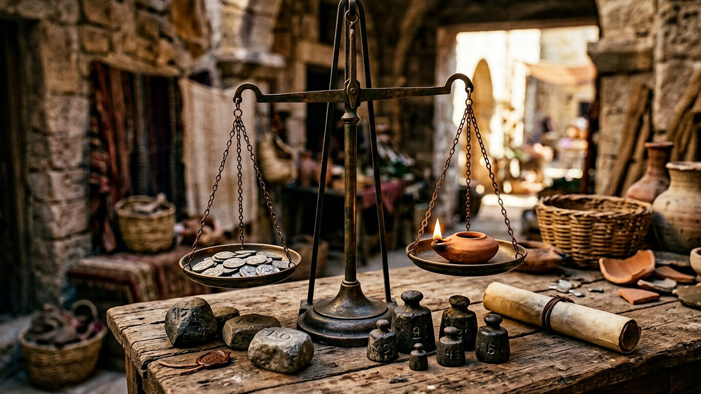
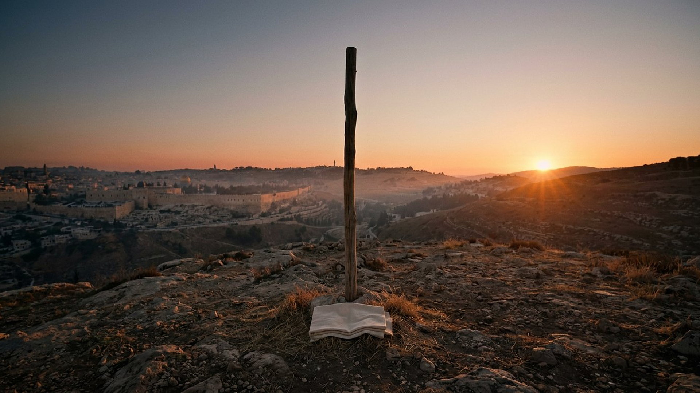

Salle 44 — Matthieu 20 ; 1 Timothée 2 ACCOMPLIE
La rançon : le prix d’une vie pour beaucoup
« Le Fils de l’homme est venu (…) pour donner sa vie comme la rançon de plusieurs. » — Matthieu 20:28 (d’après Segond 1910)
Reconstitution numérique — la source du jardin et le chemin qui s’en éloigne : ce qui a été perdu, et qu’il fallait racheter.
La mécanique qui rend le reste possible
Sans cette salle, les précédentes flottent : pourquoi les morts pourraient-ils revenir (salle 39), pourquoi un Royaume pardonnerait-il à des humains imparfaits (salle 40) ? La réponse du Nouveau Testament tient en un mot du marché antique : la rançon — le prix payé pour libérer un captif. Jésus le dit de sa propre mission : donner « sa vie comme la rançon de plusieurs » (Matthieu 20:28). Paul précise la nature du prix : « un seul médiateur entre Dieu et les hommes, Jésus-Christ homme, qui s’est donné lui-même en rançon pour tous » (1 Timothée 2:5-6).
Dans la lecture retenue par ce musée, l’équilibre est exact : Adam, humain parfait, a perdu par sa désobéissance la vie parfaite pour lui et sa descendance (Romains 5:12) ; Jésus, humain parfait lui aussi, donne en échange une vie humaine parfaite — « rançon correspondante », selon le mot grec de Paul. Ni plus, ni moins : un homme parfait contre l’homme parfait perdu, la balance à l’équilibre. C’est ce prix qui fonde le pardon, la résurrection des morts et l’entrée dans le Royaume. La salle présente le mécanisme sobrement, sans figurer le supplice : un poteau vertical unique, vide, à l’aube — et aucun instrument en forme de croix, conformément au choix de tout le musée.
Le récit en cinq temps
Avancez dans l’échange, d’une station à l’autre.

Le banc des preuves : un mot, un manuscrit, un débat
FAIT ARCHÉOLOGIQUE
1 Timothée dans le Codex Sinaiticus (EV-53)
Le Codex Sinaiticus (IVe siècle, British Library, Add MS 43725 — déjà rencontré en salle 32) transmet les lettres pastorales, dont 1 Timothée 2 et son « rançon pour tous ». Le vocabulaire du prix payé appartient au texte le plus anciennement conservé des lettres, non à un développement médiéval.
LECTURE PROPHÉTIQUE
Pourquoi il fallait un homme parfait
La correspondance est la clé de voûte : « comme par un seul homme le péché est entré dans le monde (…), ainsi par un seul acte de justice, la justification qui donne la vie s’étend à tous les hommes » (Romains 5:12, 18). Ni un ange ni un homme pécheur ne pouvaient équilibrer la balance : il fallait la valeur exacte de ce qu’Adam avait perdu — une vie humaine parfaite et sans dette.
DÉBATTU
Comment comprendre la mort de Jésus ? Les théories
Les siècles chrétiens ont proposé plusieurs modèles : rançon payée (aux Pères, parfois « au diable », ce que cette salle récuse — le prix est offert à Dieu), satisfaction à l’honneur divin (Anselme, XIe siècle), victoire sur les puissances du mal, exemple moral qui convertit. Le musée retient le modèle de la rançon correspondante et présente les autres comme des lectures débattues, sans les caricaturer.
Quatre clés pour bien peser l’échange
1. Un prix, pas une métaphore floue
Dans les marchés antiques, la rançon libérait réellement : esclaves affranchis, prisonniers rachetés. Paul et Jésus emploient le mot technique de ces transactions ; la salle le prend au sérieux, avec ses deux plateaux — ce qui est perdu, ce qui est donné.
2. « Pour tous », à appliquer par étapes
Le prix est donné « en rançon pour tous » (1 Timothée 2:6), mais il s’applique dans le temps : d’abord à ceux qui exercent la foi, puis, pendant les mille ans, à l’humanité relevée et instruite (salles 32, 39 et 33). Personne n’est sauvé de force ; personne n’est oublié de la balance.
3. Le poteau, avec pudeur
Le musée montre l’instrument vide, au matin, linge plié à sa base : il suggère le prix sans exposer la torture. C’est le même parti pris que dans la salle 09 (le Messie) : le visiteur sait ce qui s’est passé ; l’image n’en fait pas un spectacle.
4. La prescience avait tout annoncé
Cette mort n’improvise rien : le Serviteur d’Isaïe 53 « a porté nos souffrances » (salle 19), et le Psaume 22 décrivait la scène des siècles plus tôt (salle 21). La rançon est l’endroit où les prophéties de la première moitié du musée viennent se nouer.
Prescience n’est pas fatalité — un don reçu librement
Un prix payé d’avance n’oblige personne à sortir de prison : il ouvre la porte. « Le don gratuit de Dieu, c’est la vie éternelle » (Romains 6:23) — un don se reçoit ou se refuse. La rançon garantit que la libération est possible pour tous ; elle ne décide à la place d’aucun captif.

Salle 19 : Isaïe 53, le Serviteur souffrant · Salle 39 : la résurrection rendue possible · Salle 40 : le Royaume
Écouter la salle
Transcription de la narration
Bienvenue dans cette salle du musée. Vous allez découvrir une source claire au milieu des rochers et des palmiers, une balance ancienne posée sur un comptoir de marché, puis une colline silencieuse au lever du soleil. Bonne visite. La visite avance en cinq étapes courtes. Prenez le temps d’observer chaque image et de lire les panneaux : ils présentent un jardin perdu, un prix à équilibrer, et ce que des générations de lecteurs en ont compris.